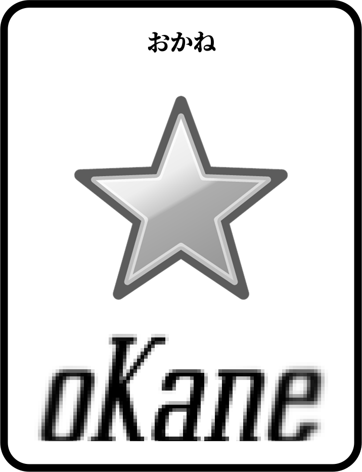

oKane / brand
Lockup, mark, inverse and monochrome. The star and おかね are vector. The wordmark is the original raster from the PSD, kept as an embedded image because the layer had filters and effects.
Use on light backgrounds. Minimum width: 320 px. Below that, use the mark.
Light
Tint
XP blue / inverse
Dark / inverse
Transparent PNG
Light

Dark / inverse

Transparent PNG
Black / light

White / dark
Vertical badge for square or narrow spaces. Minimum width: 240 px.
Use the mark for favicons, app icons and spaces narrower than 320 px.
Black / light

White / dark
Keep at least half the star height free around the lockup.